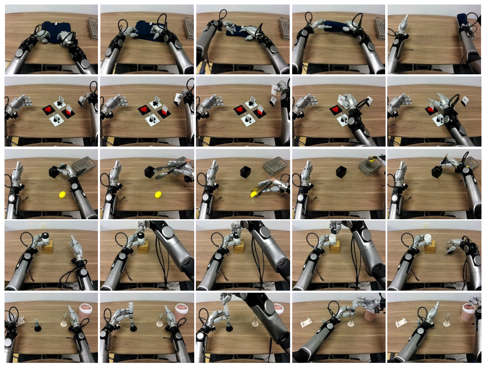
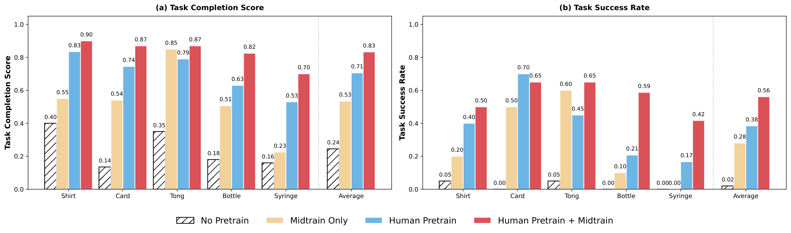
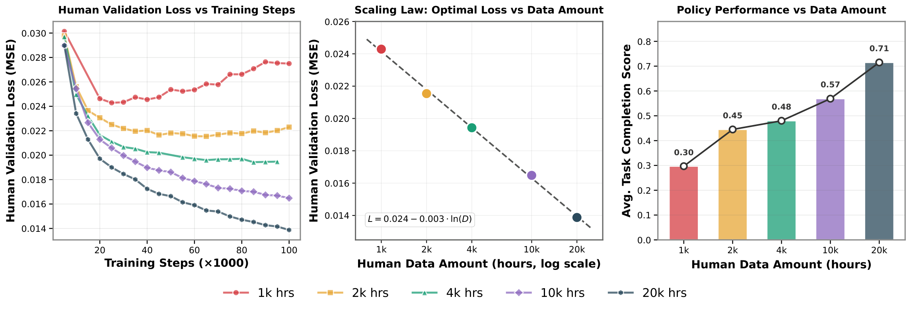
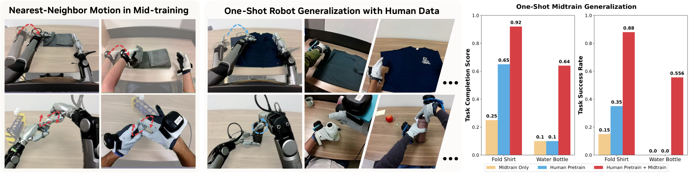
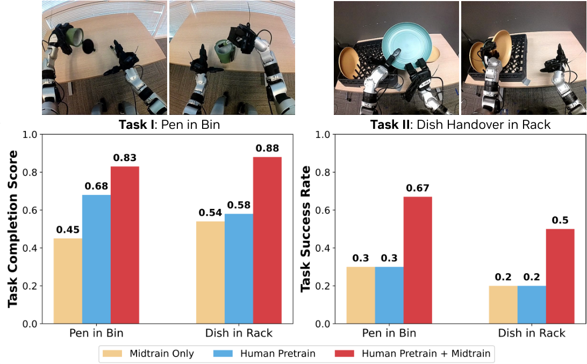

1. 论文速览与证据链
1.1 这篇论文到底证明了什么
EgoScale 研究的不是“能否从少量人类视频模仿一个动作”，而是一个更基础的规模化问题：当机器人灵巧手数据昂贵、遥操作吞吐量低时，大量普通人类第一视角视频能否形成可预测、可迁移的运动先验，并最终改善真实机器人控制。作者把问题拆成三个连续环节：大规模人类视频负责学习广泛的视觉—动作规律；少量人机对齐数据负责把人类动作表示锚定到机器人传感和执行接口；最后的任务后训练负责把通用先验压到具体的灵巧操作任务上。
论文最重要的结论并非单个任务上的最高成功率，而是三条相互咬合的证据。第一，相对完全不做人类预训练的策略，人类预训练将五个任务的平均 task completion 从 0.24 提升到 0.71，联合 mid-training 后达到 0.83；第二，把人类视频从 1k 小时扩展到 20k 小时，真实机器人平均完成度从 0.30 单调升至 0.71；第三，人类验证集动作预测损失与数据规模呈近似对数线性关系，拟合达到 R²=0.9983，而损失下降又与真实机器人性能同步改善。也就是说，作者尝试把“多收集人类数据有用”推进为一个可测量的 scaling 命题。
1.2 阅读路线：先看哪几张图
| 证据 | 回答的问题 | 关键结论 | 仍未证明的部分 |
|---|---|---|---|
| Fig. 1 三阶段框架 | 人类视频如何进入机器人策略 | 规模化预训练、具身对齐、任务专门化是三个不同环节 | 框架图本身不证明每一阶段必要 |
| Fig. 3 主结果 | pretrain 与 midtrain 各自贡献什么 | 人类预训练是主要增益来源，mid-training 在多数任务继续增益 | 仅覆盖五个桌面任务与特定机器人 |
| Fig. 4 scaling | 收益是否随人类数据规模持续增长 | 1k–20k 小时范围内验证损失和机器人完成度均持续改善 | 不能外推到更大规模或其他数据分布 |
| Fig. 5 one-shot | 人类先验能否降低机器人示范需求 | 一条机器人示范配合对齐人类数据即可学会新任务 | 并非零机器人数据，也依赖同对象的人类示范 |
| Fig. 6 G1 迁移 | 先验是否绑定 22-DoF Sharpa 手 | 迁移到 7-DoF 三指手仍获得明显增益 | 只验证两个任务和一个新具身 |

2. 研究问题与动机
2.1 真正的瓶颈不是模型容量，而是高自由度机器人监督
灵巧手策略需要同时控制腕部位姿和多个手指关节。对夹爪而言，“接近—闭合—移动”可能已经覆盖主要控制结构；对 22-DoF 手而言，揉搓卡片、稳定夹住钳子、拧松瓶盖和推注射器分别依赖不同的接触模式、手指协调与长程状态。遥操作采集不仅慢，还容易受到操作者熟练度、手部映射误差和硬件磨损影响。因此，只靠机器人示范扩充技能范围，会让数据成本随任务与对象组合快速增长。
人类视频恰好拥有相反的优势：规模巨大、任务长尾丰富、自然环境多样，但缺少机器人可直接执行的动作标签。EgoScale 的核心问题于是变成：能否将人类腕部运动与手部姿态转成统一动作监督，让策略先在人类数据上学习“如何操作”，再用少量机器人数据学习“这台机器人如何执行”。
2.2 三个 gap：观测、动作和控制闭环
观测 gap 来自人类头戴相机和机器人头部/腕部相机的视角、内参与遮挡差异；动作 gap 来自人手骨骼与机器人关节空间不一致，人类关键点不能直接作为电机命令；闭环 gap 则更隐蔽，人类轨迹即便几何上合理，也未经历机器人执行误差、延迟和接触扰动。EgoScale 没有声称单靠预训练消灭这些差异，而是用 aligned mid-training 将大规模但噪声较高的人类先验，连接到规模很小但具备真实机器人接口的数据。
2.3 为什么不能只做人类视频预训练或只做 mid-training
只做人类预训练，策略可以学到常见动作形态和物体交互规律，但在真实机器人上仍需要适应不同关节限制与 proprioception。只做 aligned mid-training，则数据规模只有约 50 小时人类和 4 小时机器人，覆盖不足以形成广泛的运动先验。论文的实验设计专门保留了 Human Pretrain、Midtrain Only、Human Pretrain + Midtrain 三种配置，目的就是把“规模带来的先验”和“对齐带来的落地能力”拆开测量。
4. 数据、表示与训练方法
4.1 大规模人类数据：广度与噪声同时存在
预训练集包含 20,854 小时带动作标注的第一视角人类操作视频，覆盖 9,869 个场景、6,015 类任务和 43,237 个物体。这个规模比作者所比较的既有人机迁移数据高出 20 倍以上。数据并非均匀分布：零售消费品、时尚、维修、食品饮料等类别占据较大比例，大量对象与任务形成明显长尾。长尾的价值在于让模型见到更多手—物交互组合；代价则是相机运动、遮挡、跟踪质量和任务边界都不如实验室数据稳定。
为补充高精度监督，作者加入 829 小时 EgoDex 数据，其中包含 194 个桌面任务，并借助 Apple Vision Pro 获得更准确的手部跟踪。这里的角色分工很重要：大规模自然视频提供覆盖面，高精度数据改善动作标签质量。论文没有把两者混为同一种监督，也没有声称所有 20k 小时数据都具有同等动作精度。

4.2 从人手轨迹到机器人可学习动作
人类动作由相机位姿与 21 个手部关键点构成。设第 t 帧相机在世界坐标系中的位姿为 Tᵗ₍w←c₎ ∈ SE(3)，手腕关键点在相机坐标系中的位姿为 Hᵗ₍c,1₎，则手腕世界位姿为：
为了削弱绝对场景坐标差异，策略预测相对初始帧的腕部运动：
手指部分不能简单把人类 fingertip 位置复制给机器人，因为不同手型、连杆长度和关节限制会导致不可达姿态或失去接触。作者使用优化式 retargeting，将人类手部关键点拟合到 Sharpa 22-DoF 关节空间，并显式满足机器人运动学与关节限制。这个表示保留了“手指应形成什么构形”的信息，同时把输出放到可执行关节空间中。
4.3 aligned mid-training 数据如何桥接 embodiment gap
mid-training 数据覆盖 344 个桌面任务，每个任务约有 30 条人类轨迹和 5 条机器人轨迹，总计约 50 小时人类数据与 4 小时机器人数据。作者让人类与机器人执行相似任务，并尽量匹配相机视角和标定内参；人类腕部使用 Vive tracker，手部使用 Manus glove 记录 25 个关节变换。它不是逐帧严格配对的动作翻译数据，而是任务和观测分布层面的对齐 play data。
这种数据的关键价值在于让模型同时看到“人类如何完成相同交互”和“机器人在自己的感知、状态、关节空间中如何执行”。因此 mid-training 更像一个接口转换层：它不需要重新覆盖所有技能，但必须包含足够多的共同任务来校准人类表示到机器人控制之间的映射。
4.4 模型信息流与缺失 proprioception 的处理
策略采用类似 GR00T N1 的 flow-based VLA。图像与语言指令经过 VLM 得到条件表示，DiT action expert 在该条件下预测未来动作 chunk，并以 flow matching 目标训练。机器人轨迹含有 proprioceptive state，人类轨迹没有；作者为人类数据使用可学习 placeholder token，使同一架构能够接受两类输入。对于不同 embodiment，proprioception encoder 和手部 action head 使用轻量的具身条件 MLP adapter，而相对腕部动作、VLM backbone 与 DiT action expert 尽量共享。
这个设计把缺失状态视为一种明确的数据模态，而不是伪造人类 proprioception。它允许模型从人类数据中吸收视觉—语言—运动关系，再在机器人数据上学习闭环状态条件。但 placeholder token 也意味着人类预训练无法直接学习机器人状态误差恢复，这一部分仍主要依赖 mid-training 和 post-training。
4.5 三阶段训练配方
| 阶段 | 数据与目标 | 训练设置 | 主要作用 |
|---|---|---|---|
| Stage I Pre-training | 20,854 小时人类视频，预测腕部与 retargeted hand action | 100k steps，256 张 GB200，global batch 8192，LR 5e-5，全部参数解冻 | 学习广泛的人类操作运动先验 |
| Stage II Mid-training | 约 50 小时人类 + 4 小时机器人 aligned play data | 50k steps，batch 2048，LR 3e-5；冻结 VLM backbone，更新 vision encoder 与 DiT action expert | 连接人类动作表示与机器人感知/控制接口 |
| Stage III Post-training | 目标任务机器人示范 | 10k steps，batch 512，LR 3e-5 | 适配具体任务、对象和成功标准 |
5. 实验设计与结果
5.1 五个任务分别考察哪一种灵巧性
实验平台为 Galaxea R1Pro 双臂机器人与 22-DoF Sharpa 灵巧手。除 Shirt Rolling 只有 20 条机器人示范外，其余任务各使用 100 条遥操作示范。评估通常对每个 checkpoint 运行 10 次，Tongs 任务则在四个瓶子上各运行 4 次，共 16 次。作者同时报告二元成功率和细粒度 task completion score，并用图像叠加方式约束初始状态，减少不同测试轮次起始位置差异。

5.2 主结果：规模化预训练是主要增益，mid-training 负责继续落地

作者在正文中将人类预训练相对 scratch 的平均 task completion 增益概括为超过 55%。从图中也能看到，单靠 4 小时机器人参与的 mid-training 虽明显优于 scratch，却仍低于大规模人类预训练；这意味着提升不能简单归因于“多加了一点机器人数据”。反过来，联合配置在平均 completion 和 success 上都最高，说明大规模先验仍需要机器人侧对齐才能充分兑现。
5.3 scaling：验证损失是否能够预测真实机器人收益

验证损失的计算也值得注意：作者使用 2,000 条第一视角 episode 作为验证集，每条轨迹采样 20 个时间步，每个时间步采样 16 次 flow policy 输出并取平均，再与真实动作计算 MSE。这比只报告训练损失更有说服力，因为它衡量模型对未见人类轨迹的动作预测。然而它仍是离线动作误差，不直接包含接触恢复、控制延迟和闭环稳定性；真实机器人曲线是将这个离线指标连接到执行能力的关键补充。
5.4 one-shot：一条机器人示范并不等于零样本

失败模式进一步揭示任务差异：折衣服常失败在折叠未完成或形状不够规整；拧瓶盖则可能已经取下瓶盖，却因后续抓持不稳定而无法满足完整成功标准。这说明 completion score 与 success rate 必须同时看：前者能反映策略已经掌握多少阶段，后者才检验长程任务是否完整闭环。
5.5 G1：跨具身收益来自共享先验还是仅仅多了数据

5.6 动作表示消融揭示了什么
论文的动作表示消融表明，仅预测 wrist motion 对 Tongs 与 Cards 等需要手指持续调整的任务表现较差，因为腕部轨迹无法描述揉搓、分卡和工具握持。直接将人类 fingertip 映射到机器人则可能生成不符合机器人关节约束的姿态，导致接触丢失。优化式 retargeting 的价值不只是“更精确地模仿人手”，而是把人类手势投影到一个机器人能够持续执行的关节空间。这个结论也提示，EgoScale 的 scaling 效果依赖动作标签质量；若关键点跟踪或 retargeting 系统性失真，增加视频时长未必带来同等收益。
6. 复现路线与工程风险
6.1 最小可行复现不应从 20k 小时开始
完整 Stage I 使用 256 张 GB200、global batch 8192 和 100k steps，普通实验室几乎不可能等规模复现。更合理的最小实验是选取 1k、2k、4k 三个数据子集，在同一动作提取和模型设置下复现“小数据更早过拟合、验证损失随规模下降”的趋势；随后选择一个已有遥操作管线的灵巧任务，对比 scratch、human pretrain、pretrain + midtrain 三种配置。验收重点应是趋势与阶段贡献，而不是追求论文的绝对分数。
6.2 数据准备是最大工程量
需要稳定地恢复相机位姿、手腕运动和 21 个手部关键点，并将手部姿态 retarget 到目标机器人关节空间。大规模视频处理还必须记录跟踪置信度、遮挡、视频切段与任务标签，否则噪声会被误当作动作监督。aligned mid-training 需要匹配人类与机器人视角、任务和对象，并为人类执行配备 Vive tracker 与 Manus glove 或功能等价设备。仅下载视频而不重建这些动作标签，无法复现论文的核心训练目标。
6.3 复现风险清单
| 风险 | 为什么重要 | 可检查的验收标准 |
|---|---|---|
| 人类动作标签噪声 | 会直接污染 flow matching 监督 | 按遮挡/跟踪置信度分组报告验证损失 |
| retargeting 质量 | 决定手指动作是否机器人可执行 | 离线检查关节越界、接触丢失与姿态误差 |
| 人机视角不匹配 | 削弱 mid-training 对齐作用 | 对齐前后分别测量同任务视觉特征与控制性能 |
| 真实机器人评估方差 | 每任务试验次数有限 | 保留两个随机种子并报告逐次结果 |
| 算力与 batch 差异 | 可能改变 scaling 曲线与优化稳定性 | 固定总 token/样本数并报告有效 batch |
6.4 一个可执行的分阶段复现方案
第一阶段只验证动作表示：在几十小时高质量第一视角数据上比较 wrist-only、直接 fingertip mapping 和优化式 retargeting。第二阶段验证数据规模：固定模型与训练样本配比，做至少三个规模点并保留独立人类验证集。第三阶段加入一小组 aligned human-robot tasks，检查 mid-training 是否提升未见任务的一示范适配。最后再迁移到不同自由度的手，确认共享 backbone 与具身 adapter 的职责是否符合论文假设。每一阶段都有独立可验收结果，能够避免把失败笼统归因于“数据不够大”。
7. 分析、局限与边界
7.1 最有价值的贡献是可测量的 human-data scaling
EgoScale 把人类视频从一种辅助模态提升为灵巧控制的主要预训练监督，并且没有只展示“有数据比没数据好”。论文用五个数据规模、离线验证损失和真实机器人任务完成度构成了连续证据链，使研究者可以在昂贵的机器人后训练前，先通过人类验证损失判断预训练是否仍在获益。这一思路对后续工作最有启发：数据选择、动作标签质量和 scaling 曲线可以成为机器人数据效率研究的共同评价对象。
7.2 证据最强与最弱的地方
最强证据是四种训练配置在五项真实任务上的系统对比，因为它把大规模预训练和少量对齐数据的作用拆开；scaling 图则进一步说明提升随数据规模持续发生。相对较弱的是跨具身泛化：G1 结果很有价值，但只有两个任务和一种新手型。one-shot 结果同样需要准确表述，它证明机器人示范需求可以降到一条，却仍使用每对象 100 条对齐人类示范，因此不应被解读为“看任意视频即可直接控制机器人”。
7.3 方法边界
论文任务以视觉可观察、低速桌面操作为主，尚未充分验证强触觉、力控制、快速动态操作或严重遮挡。人类视频动作监督依赖手部和相机跟踪，无法直接表达接触力、摩擦和机器人执行误差。mid-training 能缓解 embodiment gap，但没有消除它；当目标机器人手型与人手差异更大，或任务的最优策略不类似人类动作时，共享先验可能减弱。数据分布也偏向日常消费品和人类常见场景，对工业特种工具或非人类形态的外推需要单独验证。
7.4 最值得继续做的实验
一个直接后续是将 scaling 曲线拆成“数据时长、任务多样性、动作标签精度”三条轴：在相同时长下比较长尾多样性与高质量窄分布数据，判断 20k 小时收益究竟来自总帧数还是交互覆盖。另一个实验是控制 mid-training 的任务重叠程度，比较同任务对齐、同对象不同任务对齐和完全不同任务对齐，以确定对齐数据究竟学习的是视觉域转换、动作接口还是任务级对应。最后，应加入触觉或力信息，检查人类视频先验对接触丰富任务是否仍能通过少量机器人数据落地。
8. 组会问答准备
Q1：这篇论文的核心创新只是把数据做大吗？
不是。规模是必要条件，但论文的完整贡献包括：把人类视频转成腕部相对运动与可执行的 retargeted hand action；用少量 aligned human-robot play data 对齐具身接口；并用离线验证损失与真实机器人完成度共同验证 scaling。若只有 20k 小时视频而没有动作监督和 mid-training，无法得到论文展示的控制结果。
Q2：主结果如何说明 human pretraining 比 mid-training 更重要？
平均 task completion 中，Midtrain Only 为 0.53，Human Pretrain 为 0.71，而 No Pretrain 为 0.24；在人类数据规模远大的前提下，预训练带来更大总体提升。联合方案达到 0.83，说明 mid-training 仍能把先验进一步锚定到机器人。正确结论是“预训练是主要增益来源，mid-training 是有效的具身对齐补充”，而不是二者择一。
Q3：为什么 scaling 图比单个最高成功率更重要？
单点结果只能说明某个配置有效，scaling 图则检验收益能否随数据投入持续增长。1k 到 20k 小时之间，验证损失近似按对数规律下降，真实机器人完成度从 0.30 升到 0.71，并且在测量范围内没有饱和。这使数据规模成为可研究、可预测的变量。不过五个规模点仍不足以保证更大规模继续遵循相同规律。
Q4：one-shot 结果最容易被误读成什么？
最容易被误读成“只给一条示范就能从零学会”。实际上，一条指的是机器人示范；每个任务还配有 100 条对齐人类示范，模型此前也经历了 20,854 小时预训练和 aligned mid-training。结果证明的是机器人侧示范效率，而不是完全零样本或零人类任务数据。
Q5：G1 实验为什么能支持跨具身，但还不够充分？
G1 使用 7-DoF 三指手，与原 22-DoF Sharpa 手在自由度和动作接口上差异明显；联合配置在两个任务的成功率上分别达到 0.67 和 0.50，显著高于 0.30 和 0.20 的单阶段配置，说明共享先验可迁移。但只有一个新具身和两个任务，尚不能判断迁移是否适用于夹爪、软体手或更非人形的执行器。
Q6：如果资源有限，最应该复现哪一个结论？
优先复现“小规模人类动作预训练 + 少量 aligned mid-training 是否优于等量机器人训练”，而不是追求 20k 小时。这个实验能够同时检查动作标签、retargeting、共享 backbone 和具身 adapter 是否真正工作，也最接近论文的核心因果问题。